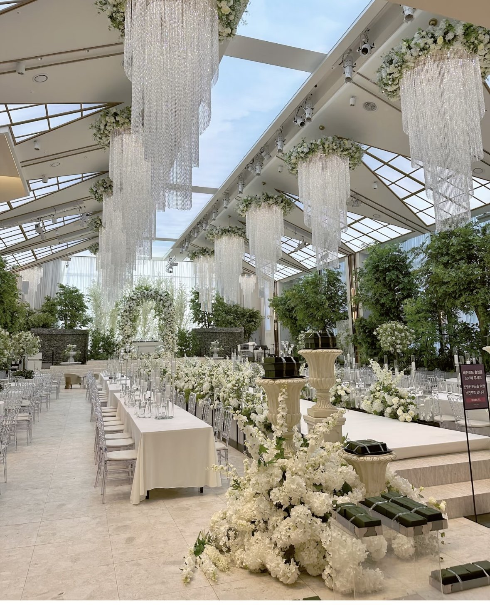
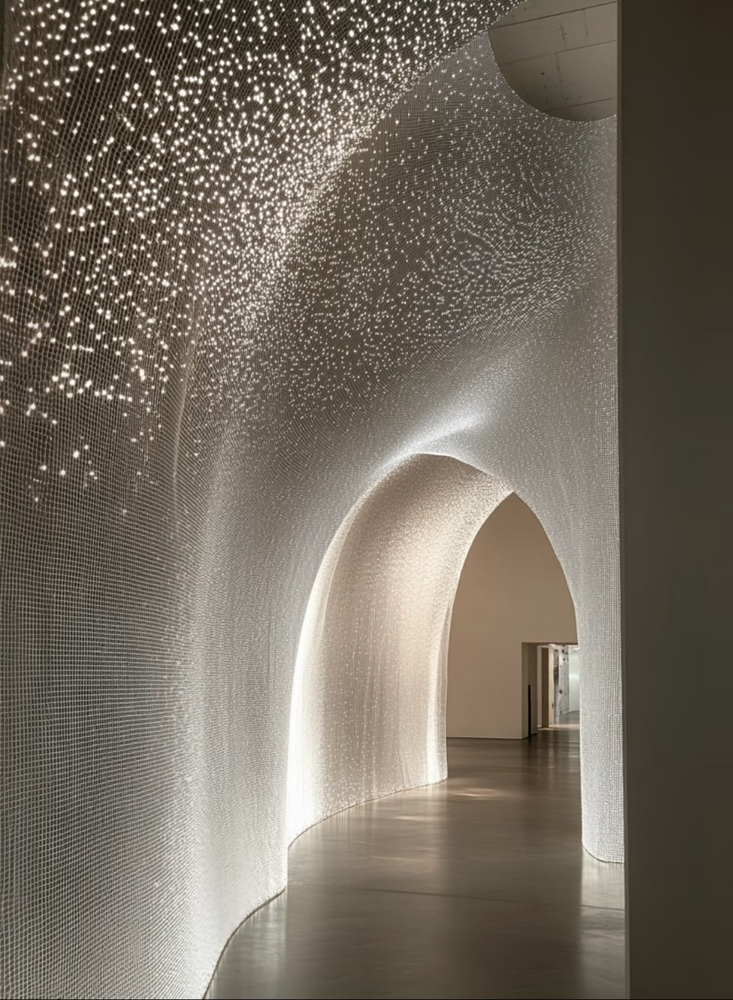
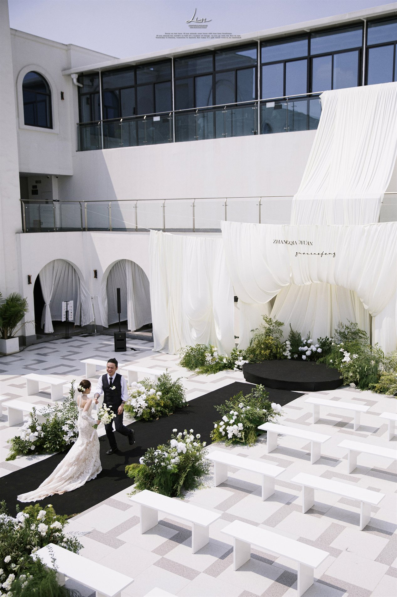
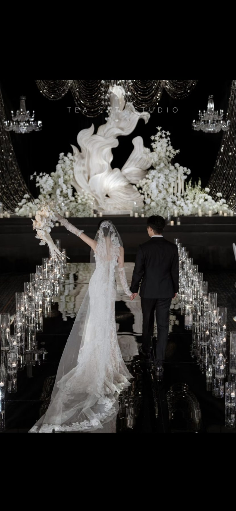
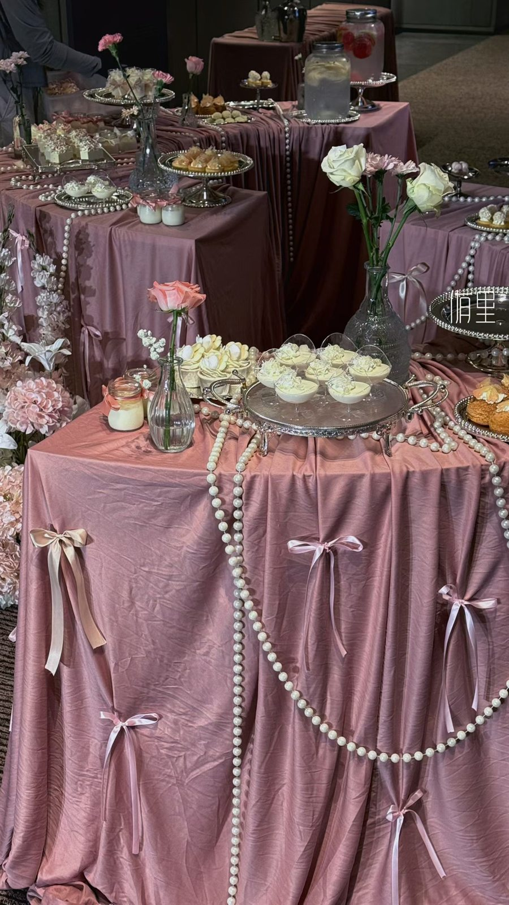
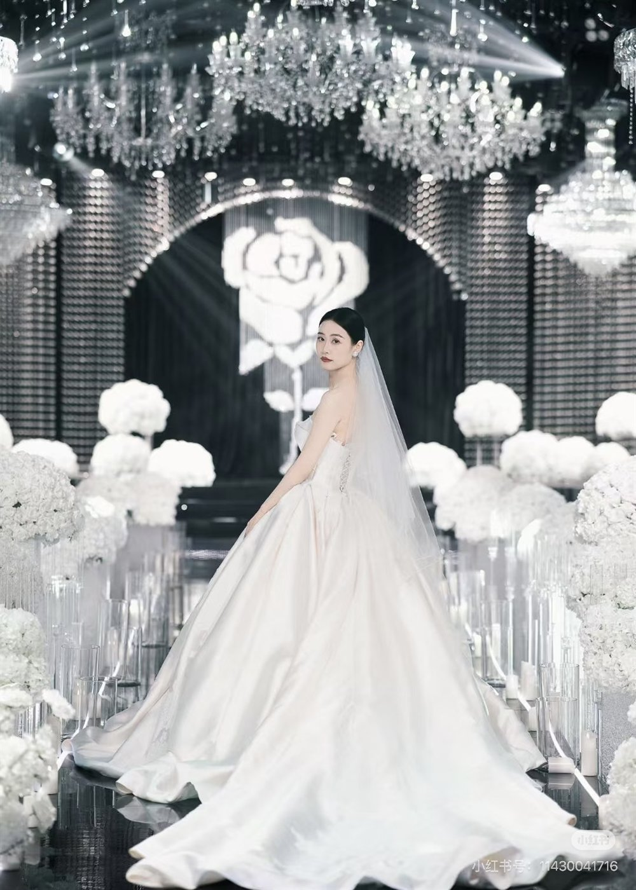
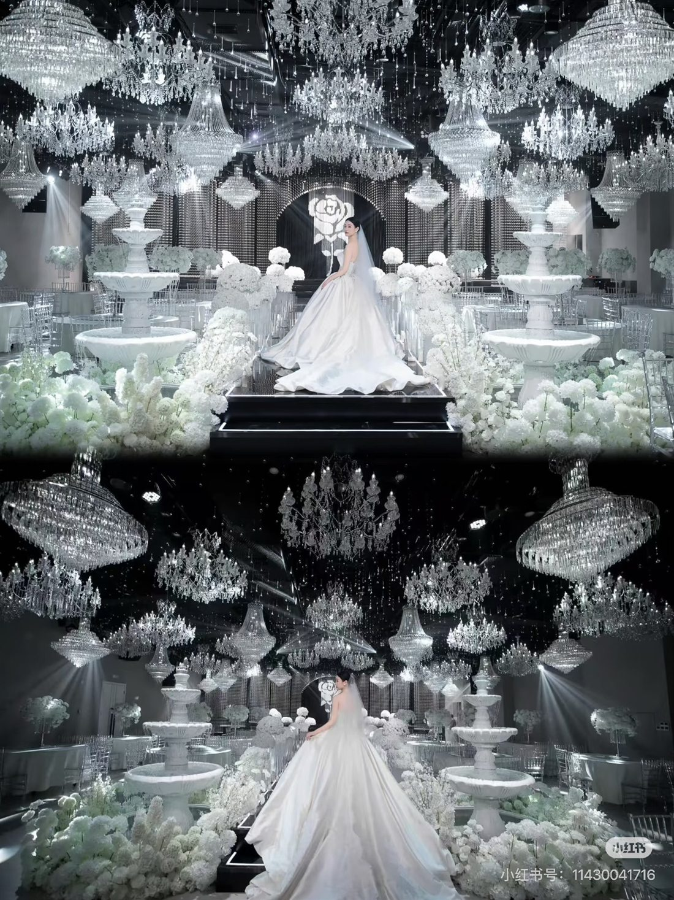

玻璃花园厅
自然采光、水晶吊饰和白绿花艺，适合清透花园感婚礼。
For Every Ceremony
Wedding Halls
主营婚礼堂空间与宴会场景，兼顾仪式感、宾客动线、灯光结构和影像出片效果。

以立体花艺、法式穹顶和暖金灯光构成主视觉，适合大宴会、高定婚礼与仪式宴会一体化呈现。

自然采光、水晶吊饰和白绿花艺，适合清透花园感婚礼。

用灯幕和拱形动线营造入场记忆点，适合迎宾与影像取景。

从舞台结构到光影测试，提前把镜头里的最终效果校准好。
Main Services
提供仪式厅、宴会空间、灯光舞美、动线规划与场地执行。
从主题策划、空间设计、花艺舞美到当天统筹，完成完整婚礼方案。
提供主纱、出门纱、敬酒服、男士礼服与礼服搭配建议。
新娘妆、妈妈妆、伴娘妆与婚礼全天跟妆，统一整体视觉气质。
婚礼跟拍、婚礼电影、快剪与影像团队统筹，记录关键瞬间。
匹配仪式风格的主持人，完成流程串联、情绪推进与现场控场。
Case Gallery
把场景、人物、细节与影像动线放在一起呈现，方便新人快速判断自己的婚礼会落在哪一种气质里。

黑白基底与水晶灯幕形成强记忆点，适合庄重、璀璨、镜面质感的仪式表达。

以粉色花瀑、草坪和自然树影构建轻盈户外仪式。

建筑外立面、白色布幔和黑色通道，让日间仪式更干净。

为摄影摄像保留纵深、烛光和背影画面，仪式感更完整。

甜品、花艺、布艺和小物件统一色调，形成可拍照的宾客停留区。
适合偏自然、明亮、清透的新娘风格，与白绿色系妆造更合拍。
Bridal Styling
我们会把婚纱礼服放回真实场景里判断：舞台色温、通道反光、摄影机位、妆面浓淡和主持流程都会影响最终观感。


Service Process
先确认场地与预算，再推进设计、人员、物料与当天流程，减少新人反复沟通的压力。
确认婚期、人数、预算、风格偏好与核心服务需求。
匹配婚礼堂空间，输出主题方向、动线和视觉方案。
落实礼服、妆造、摄影摄像、主持及婚礼执行团队。
完成彩排、物料复核、当天控场和仪式全流程执行。
Consultation
你可以先留下婚期、人数和最关心的服务板块。顾问会优先围绕婚礼堂档期与整体预算，给出可落地的沟通方向。